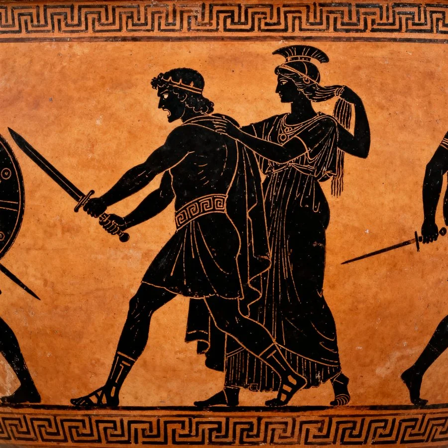
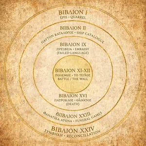
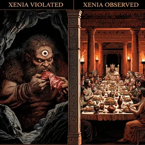
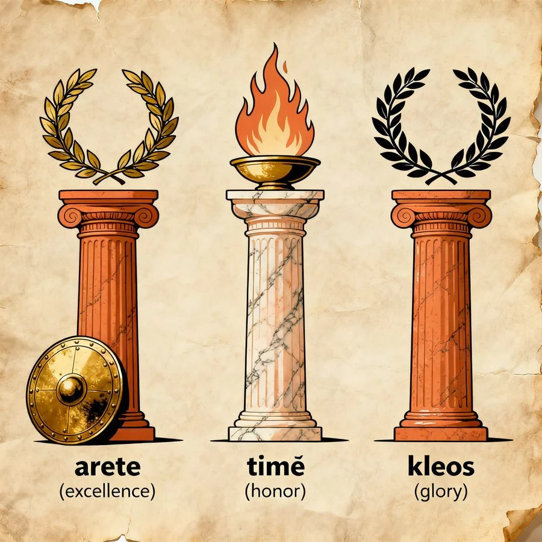
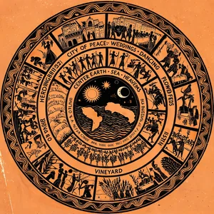

荷马史诗 · 八维解剖
Iliad & Odyssey — 文明源代码的结构分析


叙事结构：两个相反的时钟
荷马发明了「从中间开始」（in medias res），但两部史诗的「中间」完全不同。
Iliad 的时钟收缩：全诗覆盖特洛伊战争第十年的 51 天，但实际叙述集中在 4 天。战争的九年被压缩进四天的叙事密度。结构上是钟摆式——战局从特洛伊城门退到海岸线、再推回城墙、再退到船边、再推回城内——空间来回震荡，直到 Hector 死后一切静止。

Odyssey 的时钟膨胀：十年漂泊被折叠进 Books IX–XII 的第一人称回忆（Apologoi 插叙），但诗中的「现在」只覆盖约 40 天。前八年（Cicones → Calypso）在 Odysseus 的口述中一闪而过——结构不是线性的，是嵌套的。
双史诗的时间哲学：Iliad 的 51 天 → 全部指向一个终点（Hector 的死亡）；Odyssey 的十年 → 全部指向一个起点（Ithaca 的炉灶）。一部向死，一部向生。
人物弧线：四条不能被合并的轨迹
Achilles：愤怒 → 非人 → 悲悯。这不是「成长」——是解构后重建。Book I 荣誉受损退出 → Book IX 拒绝修复（τίμή 经济破产）→ Books XVIII–XXI Patroclus 死后愤怒升级为非人化——杀 Lycaon（抱膝求饶仍被剖腹）。Book XXIV：Priam 来赎尸时，Achilles 看着敌人的父亲，想起了自己的父亲。两个人的眼泪没有化解仇恨，只是覆盖了它。


Hector：从英雄到猎物。Iliad 最残酷的地方在于，Hector 的弧线是下坡路。Book VI 摘下头盔不让 Astyanax 害怕——人性的巅峰。Book XXII 见 Achilles 冲来时逃跑——「Hector stood his ground, but when he saw Achilles, his heart failed him and he fled.」城墙上跑三圈不是懦弱，是一个人意识到自己即将死去时的完整恐惧。
Odysseus：从智胜到忍耐。Iliad 里他只是参谋。Odyssey 里经历了从 μῆτις（纯粹智力）到忍耐的转变。前九年每一场冒险都是智力测试，但 μῆτις 救他于每个险境，也害他于每个长远选择。Calypso 岛上他不再靠智力——每日坐在海边望海哭泣。nostos 的终点不是机智，是忍耐。
Penelope：缺席的女英雄的完整智慧。织布计（三年，破于第四年）、衣着细节测试、橄榄木床测试——她的 μῆτις 与丈夫完全镜像对称。他靠伪装活下来，她靠怀疑活下来。区别在于代价：他的伪装可以卸下，她的伪装卸不下——二十年的等待已经改了她。
第一性原理：荷马的基本粒子
公理 1：人会死。荷马笔下没有「不死」的英雄，只有「选择何时死、怎么死」的英雄。Achilles 的著名选择（短命 + 不朽荣誉 vs 长命 + 默默无闻）不是神话，是死亡面前的自由意志问题。
公理 2：神不会死。这是神与人的唯一本质区别，不是力量、不是智慧。神可以受伤（Aphrodite 被 Diomed 刺伤流出 ichor）、可以被骗（Hera 骗 Zeus）、可以被击败（Ares 被 Athena 用巨石打倒），但神不会死。所以神的痛苦没有终极性。
公理 3：ξενία（客友法则）是文明的边界。谁遵守 xenia → 文明人；谁破坏 xenia → 非人 / 将被神惩罚。Cyclops 不吃客人 ≠ 他吃人——他吃「访客」，这是对 Zeus Xenios 的渎神。

公理 4：κλέος（不朽的荣誉）是死亡的唯一补偿。英雄的全部行动逻辑：既然必死，死后唯一的延续是名字被后人传唱。

公理 5：μοῖρα（命运）高于宙斯。Book XVI：Sarpedon 即将被 Patroclus 杀死时，宙斯犹豫「要不要救我的儿子？」——Hera 回答：「凡人自有其命定的死亡之日。你如果改变命运，其他神也会为自己的儿子这么做。」至高神也必须服从命运。

双史诗的碰撞：不能同时选的两种人生
| 结构性对立 | Iliad | Odyssey |
|---|---|---|
| 核心驱动 | μῆνις（愤怒） | νόστος（归乡） |
| 空间 | 特洛伊平原 ~ 5km² | 整个地中海 + 冥府 |
| 时间 | 收缩（9年 → 4天） | 膨胀（10年 → 嵌套叙事） |
| 神的态度 | 分边介入，制造混乱 | Athena 暗中辅助，有条不紊 |
| 英雄的难题 | 荣誉 vs 生命 | 智慧 vs 归途 |
| 最有力量的场景 | 两个敌人一起哭（帐篷） | 丈夫和妻子重新同床（橄榄木床） |
| 结束时的感觉 | 没有胜利，只有哀悼 | 没有和平，只有下一个战争 |
| 「英雄」的定义 | 能被后人歌唱的死者 | 能活着回家的幸存者 |
根本张力：Achilles 选择了 κλέος 而非 νόστος（他永远不会回家了），Odysseus 选择了 νόστος 而代价是 κλέος。两部史诗加在一起 = 荷马对「怎样活」的完整回答：你只能选一条路。选了不朽之名，就没有家。选了家，就得忍受一切屈辱。
神与凡人：因为神不会死，所以神不懂痛苦
荷马的神是功能性的，不是道德的。神的道德逻辑是：谁敬我，我帮谁。谁惹我，我整谁。这和凡人的人际网络没有区别——只是神有神力。
神的痛苦没有终极性。Book V：Aphrodite 被 Diomed 刺伤后哭着跑回 Olympus，Zeus 笑着对她说：「战争不适合你，我的孩子，去管婚嫁的事吧。」Book XXI：众神互殴，这些场景被写成 喜剧。为什么？因为神不会死。Ares 倒下了 → 起身、揉肩、走了。Hector 倒下了 → Andromache 从城墙上看见、晕倒、醒来后说：「你留下我和孩子，你将我变成寡妇。」神不需要面对死亡的后果，所以神不需要道德。凡人的全部道德，都源于「人会死」这一事实。
但也有例外——Zeus 对 Sarpedon 的眼泪。当 Zeus 即将失去儿子却被迫服从命运时，「他降下血红的露珠，如同为即将死去的儿子落泪。」这是全诗唯一一次——神也体验到了凡人的「不可挽回之丧失」。
神谕与命运：所有人都知道结局，但没人能改变它
Iliad 里，每一个神的干预都在实现命运，而不是改变命运。预言被拒绝时，拒绝本身就是预言的实现途径。
Teiresias 的冥府预言（Odyssey Book XI）：「太阳神牛群不能碰 → 碰了则船毁人亡、孤身归」——Odysseus 的部下在 Thrinacia 宰了牛。预言没有告诉 Odysseus「你该如何避免」，它只告诉了他会发生什么。这是希腊命运观的核心——「必然之事已存在，你只是还没走到那里。」
金天平是命运的物质化——Zeus 各取一缕命运放在天平上，希腊一侧沉下去。注意：Zeus 没有「决定」谁赢——他称量了一个已经存在的重量差。这解释了为什么 Athena 可以「迫使 Hector 停步」，但 Zeus 不能「让 Sarpedon 不死」——神可以操纵人的感知，但神不能撤销死亡本身。
神的战争：在天上打一架，什么后果都没有
Iliad Book XX–XXI 的众神之战，被荷马写成了一场闹剧。Zeus 坐在 Olympus 顶峰往下看，大笑。
为什么写成喜剧？因为神的战争没有赌注。不会有人死，不会有人永久受伤。神的战争是没有后果的力量展演——像两只猫在房顶上对吼。荷马用喜剧来标注一个形而上学事实：不死者的冲突，在意义上永远不及会死者的冲突。
对比：同一天，人间战场上——Hector 在城墙上跑三圈被 Achilles 追，喉咙被戳穿，临死前求「把我的尸体还给父亲」，被拒。一个有赌注，一个没有。荷马把两场战争并置，就是在说这句话。
人的战争：暴力面前的防线
如果神的战争是「没有代价的冲突」，人的战争就是每条防线都会崩溃的冲突。Iliad 中，人在暴力面前会依次失去五层东西：
第一层：荣誉经济 → 崩溃于 Book I。Agamemnon 夺 Briseis，证明王者可以强夺按战功分配的战利品。
第二层：语言的修复能力 → 崩溃于 Book IX。使团带十倍赎礼来求和，Achilles 拒绝。文字不能修复暴力的伤痕。
第三层：协议/契约 → 崩溃于 Book IV。Menelaus 和 Paris 的决斗本应结束战争——Aphrodite 救走 Paris，停战失败。
第四层：怜悯 → 崩溃于 Book XXI。Lycaon 丢下武器抱住 Achilles 的膝盖求饶——「Achilles 却不为所动」。这是全诗最冷的一幕。
第五层：人性本身 → 崩溃于 Book XXII。Achilles 杀死 Hector 后，把尸体绑在战车后拖行。连 Apollo 都在 Olympus 抗议：「他侮辱了无声的泥土。」

但 Odyssey 提供了另一种可能。不是「回到战争前」（永远回不去）——而是在暴力之后重建「家」。六重相认链条：狗认出气味（本能）→ 乳母摸到伤疤（身体证据）→ 牧猪奴证明忠诚 → 儿子相认 → 妻子通过「只有我们知道的事」测试（橄榄木床）→ 父亲通过「树的记忆」。归乡不是回到原点，是用最曲折的方式重新确认每根纽带。
终论
荷马不是文学的开头，是文明的结构图。Iliad 的最后一幕不是胜利，是 Priam 在 Achilles 的帐篷里亲吻杀子之手，两人一起哭泣。史诗在第一卷歌唱愤怒，在最后一卷唱怜悯。Odyssey 的最后一幕不是团圆，是复仇之后 Athena 出面阻止新一轮血仇。归乡以暴力的链条结束，需要神来打断。
战争把人变成物，归乡把物变回人。两者都是真的。两者都不容易。

基于 Samuel Butler 英译本逐卷深读 · 2026-08-05